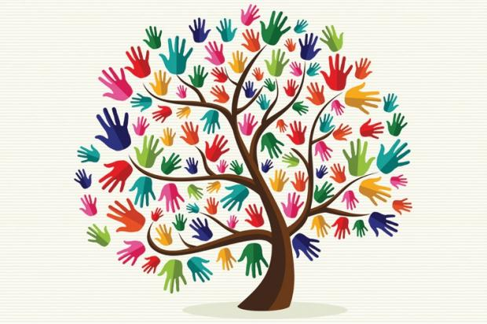

Declaration Of Human Unity
"Long Live Human Unity. . . Welcome to the Global Human Unity Meeting organized by the World Public Forum. I must congratulate Mr. Eugene Haggerty, founder of World Public Forum for his persistant physical efforts, and mental pursuits which have brought all of us under this single roof . . . Let us generate the feelings of share and care of fellow human beings." -Satya Paul (General Secretary, Servants of the People Society, New Delhi, India)
Exploring The Grandeur Of All Humans
World Public Forum's mission is encapsulated in the Declaration of Human Unity (featured in both the project's mailer packet and on the website). Its signers recognize the perilous conditions in which we live, the need for unified action on the part of all humans, and the power of human unity to utterly revivify our lives and the whole world. You are cordially invited to join hundreds of key thinkers and leaders worldwide-including suchluminaries as Walter Cronkite and His Holiness the Dalai Lama -who have signed on to this declaration. The Declaration of Human Unity can be seen as an overarching public declaration for all human-focused initiatives and projects. The respective visions and goals of diverse and crucial projects can be truly realized when the actuality that we are all humans is publicly explored, examined and projected. Jimmy Carter's initiative for human rights; Bill Gates's for unmet health needs; Al Gore's and John Doerr's measures on behalf of the environment; Sam Nunn's and Richard Lugar's Nuclear Threat Initiative; George Shultz's Nuclear Security Project; the Project for Excellence in Journalism; and our initiative for human-focused journalism (see below) are only a few of the existing initiatives that are vitally facilitated, amplified and optimized when we ground our lives in our universal human identity.From our hominid past to our present-day disconnections, we have shifted from the family, to the band, to the clan, to the tribe, and to the nation (the basis for our state system), but we have not yet shifted to the human. All of us largely identify with various derived characteristics of our lives: for example, with our individual preferences and tastes, group of associates or friends (who have their various preferences), with a profession or life role (entrepreneur, homemaker, inventor, nurturer, executive, bluecollar worker, athlete, artist), with a race, religion, culture and nationality that can create strife on a global scale. But all of these characteristics -even those that are biologically based and predetermined -are derivations of the encompassing fact that we are humans. Of course, becoming human-focused should in no way suggest rejection of, or disconnection from, any of these characteristics. Indeed, profoundly the opposite, it allows embracing and releasing them all to their highest aspirations and fullest possibilities. When human agreement becomes actuated in our lives, our cherished individuality and diverse identities become fulfilled and consummated as facets of a singular human whole. And the shared conversation and noble aspirations of all individuals and peoples are seen as mutually comforting and sustaining.